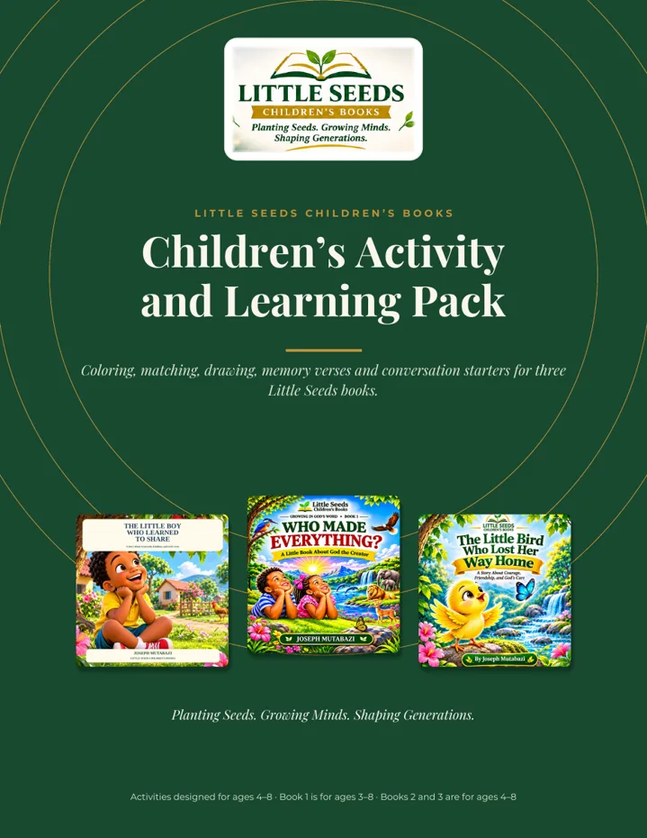
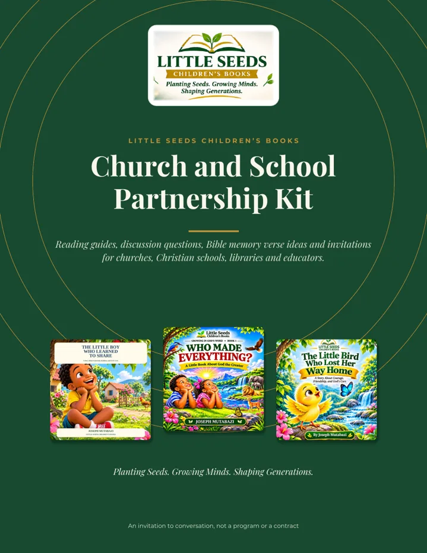
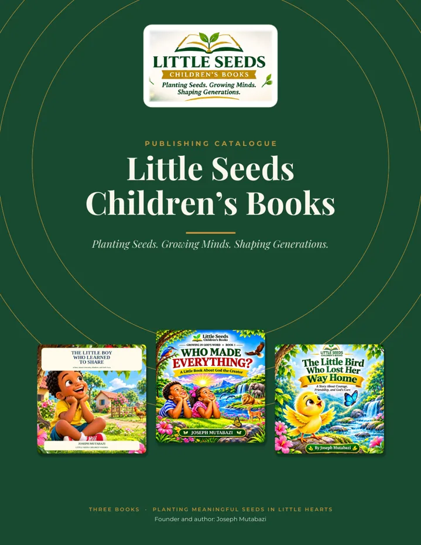

Planting Seeds. Growing Minds. Shaping Generations.
Little Seeds Children’s Books is an independent publisher of Christian and general educational books that help children discover truth, build character, and love to read.
Explore Our BooksDiscover Our MissionOne book. One little heart. One meaningful seed at a time.
A NEW BOOK IS HERE!
Who Made Everything? A Little Book About God the Creator
A beautiful journey of discovery that helps little hearts explore the God who made everything.
Now published on Amazon!
Discover the BookFeatured books
Featured educational resources
Free printable activities and teaching guides to use alongside the books.

Activity and Learning Pack
32 printable pages of coloring, story questions, matching and memory verse activities, with guides for parents and teachers.

Church and School Partnership Kit
Sunday school and classroom guides, session plans, discussion questions and memory verse ideas.

Publishing catalogue and flyers
A 12-page catalogue and printable flyers for the three books.
For parents and educators
Ways to read together, questions that start good conversations, and simple ways to learn Bible verses as a family or class.
Churches, Sunday schools and Christian schools
You are invited to use the free teaching guides and to talk with us about what your children need. No commitment is involved.
Sponsor a Book
Buy a Little Seeds book on Amazon and give it to a child, a family, a Sunday school class, a school or a library you choose.
How sponsoring works Choose a book
An Amazon purchase is an ordinary purchase. It is not a charitable donation and is not tax-deductible.
Two ways we help children grow
Christian and Biblical Education
Bible stories, biblical education, Christian character, and faith-based learning for children and the families, churches, and Sunday schools who guide them.
General Education and Children’s Literature
Educational picture books, stories that teach positive values, early learning, creativity, curiosity, and literacy for every child.
Why Little Seeds
Faithful and clear
Christian books are rooted in Scripture and say so plainly.
Made to teach
Every book has a clear learning goal and age-appropriate language.
Made to share
We want quality books to reach children with limited access to them.
Our reading and literacy mission goes beyond the page. See our community work.
Our mission and vision
Mission
To create engaging, educational children’s books that help young readers discover biblical truths, develop good character, and build a lifelong love of reading.
Vision
A trusted children’s publishing brand serving families, churches, schools, and communities around the world.
About the founder
Joseph Mutabazi is a Christian author, educator, and the founder of Little Seeds Children’s Books, passionate about planting seeds of faith, knowledge, kindness, and curiosity in little hearts.
For parents and educators
Reading guidance, discussion questions, and free printable activities for Books 1 and 2.
Join the Little Seeds list
Hear about new books and resources as they are released.
Our Books
Search and browse the Little Seeds catalogue.
About Little Seeds
Little Seeds began at home. Joseph Mutabazi noticed that his daughter reached for a book whenever she saw him reading, and he decided to become his children’s first inspiration in writing books. He also saw that many families in his community had few children’s books to share. Little Seeds is his answer to both.
The name
Every book can plant a meaningful seed in a child’s heart and mind. Seeds grow slowly, quietly, and for years.
Our mission
To create engaging, educational children’s books that help young readers discover biblical truths, develop good character, cultivate curiosity, and build a lifelong love of reading.
Our vision
A trusted children’s publishing brand serving families, churches, schools, and communities around the world, so that every child can learn and read.
Our publishing philosophy
Children deserve meaningful ideas, shared in clear language with engaging illustrations. Stories should teach without losing the joy of reading. Parents, teachers, and churches are partners.
Our two categories
Christian and Biblical Education
Books that teach biblical truth faithfully and simply.
General Education and Children’s Literature
Books that help every child learn, explore, and enjoy reading.
Quality and accuracy
Christian teaching must be consistent with Scripture. Every book has a clear learning objective, and we carefully review manuscripts, illustrations, and print production. We do not copy other authors’ content or illustrations.
Joseph Mutabazi
Christian Author & Educator | Founder, Little Seeds Children’s Books
Joseph Mutabazi is a Christian author, educator, and the founder of Little Seeds Children’s Books. He is passionate about helping children discover biblical truths, develop a love of reading, and grow in wisdom, faith, and character.
His passion for writing is rooted in the belief that childhood is an important season for planting seeds of faith, knowledge, kindness, and curiosity. Through engaging children’s stories and meaningful educational experiences, he seeks to encourage young readers to explore God’s Word, appreciate the world around them, and develop hearts filled with compassion and understanding.
Through Little Seeds Children’s Books, Joseph is building a publishing platform dedicated to Christian and biblical education, as well as general children’s literature. His vision is to create meaningful books that inspire children, support parents and educators, and positively influence future generations.
His guiding philosophy
“Every book is an opportunity to plant a meaningful seed in a child’s heart and mind.”
Planting Seeds Beyond the Pages
A book is only a seed if a child can reach it. We want quality reading to be accessible to every child.
Literacy and access
Making quality reading resources available, especially to underserved children.
Book donations
Building a sustainable initiative to donate children’s books to communities in need.
Partnerships
Working with churches, schools, libraries, and community organizations.
Educational outreach
Reading initiatives and book-sharing activities that encourage children to read.
These are our goals as Little Seeds grows. A future community program, the Little Seeds Reading Initiative, would bring them together. Partner details will be added here when programs begin.
Sponsor a Book
A book is only a seed if a child can reach it. You can help put a meaningful book into a child’s hands.
Sponsoring a book is simple: you choose a Little Seeds title, buy a copy, and give it to a child, family, church, Sunday school, school or library of your choice. Every book you share helps another child discover a story, a lesson, and a love of reading.
How it works
1. Choose a book
Pick the story that fits the child or group you have in mind. Each book lists its age range.
2. Buy a copy
Use the Amazon link for that book below. You buy the book from Amazon in the usual way.
3. Share it
Give the book to a child, a family, a Sunday school class, a school, or a library. You decide who receives it.
Why sponsor a book?
Literacy
Having a book of their own helps children practice reading and enjoy it.
Biblical learning
Our Christian books introduce children to Scripture in language they can understand.
Character development
Stories about kindness, sharing, courage and care give families something to talk about together.
A love of reading
A book that is enjoyed once is often asked for again.
Books you can sponsor
Each button opens that book’s Amazon page in a new tab. A book is listed with a button only after its Amazon page has been checked.
Churches, schools and organizations
Is your church, Sunday school, school, library or organization interested in a larger sponsorship idea? We would be glad to hear from you. Tell us about your group, the children you serve and what you have in mind.
Contacting us does not create any commitment on either side. No sponsorship program or arrangement is in place yet, and we will be clear about what we can and cannot do before anything is agreed.
Our vision: the Little Seeds Reading Initiative
Our long-term goal is to build a Little Seeds Reading Initiative that helps make meaningful children’s books accessible to more children, working with families, churches, schools, libraries and community partners. This is a goal for the future, not an existing program. We will add details here as programs begin.
Please note: buying a book on Amazon is an ordinary purchase. It is not a charitable donation and is not tax-deductible. Little Seeds does not collect donations through this website and does not currently deliver, distribute or give away books on behalf of sponsors. If this changes, we will say so here.
The wording on this page, like our Privacy Policy and Terms, is still subject to legal review and is not final.
Free Activities and Downloads
Printable PDF activities to use with the Little Seeds books at home, in class and in Sunday school.
© Little Seeds Children’s Books. All rights reserved.
Families, churches and schools may download and print these activity pages for personal, classroom, Sunday school and noncommercial educational use. Reproduction for resale, commercial distribution, modification, or redistribution as a separate product is not permitted without written permission from Little Seeds Children’s Books.
Complete Activity and Learning Pack
- 32 pages
- Books 1, 2 and 3
- About 10 MB
Children’s Activity and Learning Pack
Coloring pages, story questions, matching activities, memory verse pages and parent and teacher guides for all three books, with an answer key for grown-ups. Activities are designed for ages 4–8. Book 1 is for ages 3–8; Books 2 and 3 are for ages 4–8.
Book 3 status: the Book 3 educational activities (pages 20–28, with the answer key on page 29) have been reviewed against the approved manuscript.
Download PDFOpen in browserActivities by book
Each link opens the pack at that book’s section. Use “Download PDF” above to save the whole pack.
The Little Boy Who Learned to Share
- Ages 3–8
- Acts 20:35 (KJV)
- PDF pages 3–9
Checked against the book manuscript.
- Coloring page: Kito’s mangoes
- Story comprehension: “Remember the Story”
- Matching and kindness choices
- Sharing and friendship activity
- Acts 20:35 memory verse activities
- Parent and teacher discussion guide
Who Made Everything?
- Ages 4–8
- Genesis 1:1 (KJV)
- PDF pages 10–19
Checked against the book manuscript.
- Two creation coloring pages
- Days of creation exercises and matching
- God the Creator activity
- Made in God’s image: human value
- Caring for God’s creation
- My creation drawing
- Genesis 1:1 memory verse activities
- Parent and teacher discussion guide
The Little Bird Who Lost Her Way Home
- Ages 4–8
- Psalm 56:3 (KJV)
- PDF pages 20–28
Reviewed against the approved manuscript.
- Bird coloring pages
- Help the little bird find her way home
- Story questions and matching
- Courage and hope
- God’s care and protection
- Psalm 56:3 memory verse activities
- Parent and teacher discussion guide
More downloads
Church and School Partnership Kit
Sunday school and classroom guides, session plans and discussion questions. PDF, 20 pages.
Publishing catalogue and flyers
The 12-page catalogue and printable flyers. PDF.
Printing tips
The PDFs are US Letter size (8.5 × 11 in). When printing, choose “Actual size” or 100% so the pages are not shrunk. Ask a grown-up to help with scissors.
For Parents and Educators
Simple ways to read together, talk about stories, and help children grow in character and in Bible learning.
Reading together well
Before you read. Read the book yourself first and notice where you might pause. Choose a calm time and place, and let the child hold the book if they like.
While you read. Read slowly and let children study the pictures. Ask short questions such as “What do you see?” and “What do you think will happen?” Welcome every answer.
After you read. Ask one or two open questions, listen, say the memory verse together and choose one small thing to do. Read the book again another day; repeating a book is a good thing.
Helping children understand stories
Three kinds of questions work well: remember (what happened?), think (why do you think so?) and apply (what can I do?). Use a few questions, not all. Wait, listen, and ask “Why do you think so?”
Children read at different paces. Pre-readers can look at pictures and retell; emerging readers can point to words; older children can read aloud or write a response. Offer help without pressure.
Character development
Book 1 gives families a way to talk about sharing, kindness and friendship. Book 2 invites thanks to God and care for what He made. Notice kindness when you see it, praise it, and remember that sharing is learned slowly, with practice and patience.
Biblical learning
Use simple words: “God made us” and “God cares for us” are enough. It is fine to say “I don’t know. Let’s find out together.” Point to the Bible verse in each book and invite questions.
When feelings are big, comfort first, then encourage. Notice what a child does well and avoid pushing a child to “be brave.”
Age-appropriate discussion
Questions from the Church and School Partnership Kit. Use them with any child who enjoys the conversation, and adapt the wording to the age. Book 1 is for ages 3–8; Book 2 is for ages 4–8.
Book 1 · The Little Boy Who Learned to Share (8 questions)
- What does Kito love?
- What does Kito decide to do when Amara asks for a mango?
- How did Kito feel after he shared his mangoes?
- What wisdom does Mama share?
- What lesson from the Bible does Kito hear?
- What did Kito discover when he shared with Amara?
- What could you share this week?
- How can we show kindness to someone who has less?
Book 2 · Who Made Everything? (8 questions)
- Who made the heavens and the earth?
- What did God make on the first day? The second? The fourth?
- What did God make on the fifth day?
- Why did God rest on the seventh day?
- In whose image did God make people? Why does that matter?
- Who owns the earth?
- How can we care for what God made?
- What can you thank God for today?
Book 3 discussion questions, reviewed against the approved manuscript, are in the Activity and Learning Pack (page 28).
Learning a memory verse
Short, repeated and playful works best for ages 4–8. These verses are from the King James Version (KJV).
Book 1
“It is more blessed to give than to receive.”
Book 2
“In the beginning God created the heaven and the earth.”
Book 3
“What time I am afraid, I will trust in thee.”
Ways to learn a verse: echo it, add actions, hide a word, puzzle it, sing or chant it, draw it, pass it on to a friend, and pray it. Do not pressure children; celebrate effort.
Learning activities and resources
Free activities
Printable coloring, matching, story questions and memory verse pages.
Teachers and classrooms
Classroom reading guides and 20–30 minute session plans.
These guides are suggestions, not a curriculum. We make no claims about academic standards or learning outcomes.
Church and School Resources
Free teaching guides for churches, Sunday schools, children’s ministries, Christian schools, libraries, teachers and educators.
Church and School Partnership Kit
- 20 pages
- Books 1, 2 and 3
- About 7 MB
Partnership Kit
Helps churches, Christian schools, libraries and educators use the Little Seeds books for reading aloud, for conversation, and for learning Bible memory verses. It includes church and school information sheets, Sunday school guides, classroom reading guides, session plans, discussion questions, memory verse activities, children’s ministry ideas and a conversation worksheet.
Book 3 status: Book 3 educational activities have been reviewed against the approved manuscript and are included in the Little Seeds Children’s Activity and Learning Pack.
Download PDFOpen in browser© Little Seeds Children’s Books. All rights reserved.
Families, churches and schools may download and print these activity pages for personal, classroom, Sunday school and noncommercial educational use. Reproduction for resale, commercial distribution, modification, or redistribution as a separate product is not permitted without written permission from Little Seeds Children’s Books.
Inside the kit
Sunday school guides
Big idea, Bible connection, a 25-minute lesson flow, a memory verse, a take-home idea and a prayer starter.
Book 3 The Book 3 guide is on p. 8 of the kit.
Classroom reading resources
Before, while and after reading routines, vocabulary ideas and 20–30 minute reading and discussion sessions.
Page 9 also includes a Book 3 guide.
Discussion guides
Eight questions for each book, with the three question types: remember, think and apply.
Bible memory verse activities
Eight playful ways to learn Acts 20:35, Genesis 1:1 and Psalm 56:3 (KJV).
Children’s ministry ideas
Simple, low-cost ideas such as a sharing basket, a creation walk and a days-of-creation mural. Please check allergies and follow your church’s child safety policies.
Partnership information
Short information sheets for churches and for Christian schools, and a worksheet to plan a conversation with us.
Little Seeds is a new independent publisher. We have not established bulk pricing, a distribution program, formal partnerships or institutional endorsements, and we will not suggest otherwise. Our guides are suggestions, not a curriculum.
Partner With Us
We would like to hear from the churches, schools, libraries and families who share our hope that every child can learn and read.
Our mission
To create engaging, educational children’s books that help young readers discover biblical truths, develop good character, cultivate curiosity, and build a lifelong love of reading.
Our publishing vision
A trusted children’s publishing brand serving families, churches, schools, and communities around the world, so that every child can learn and read.
Who we would love to hear from
Churches
Use a book as a read-aloud with a memory verse, as the start of a short lesson, or for families at home.
Christian schools
Read-aloud time, Bible and chapel, character education, and writing and art ideas.
Libraries
Add the books to a Christian or early-readers shelf.
Community organizations
Reading initiatives and book-sharing activities that encourage children to read.
Educators
Reading guides, discussion questions and session plans in the free partnership kit.
Families
Free activities and reading guidance for home. Families can also sponsor a book for another child.
What is available today
- Three published picture books, available on Amazon.
- Free reading and discussion ideas, activities and the Church and School Partnership Kit.
- A conversation with the author about what your group needs. Contacting us creates no commitment on either side.
What we do not have yet: Little Seeds is an independent publisher. We have not established bulk pricing, a distribution program, formal partnerships, sponsorship commitments or institutional endorsements. If you would like to explore something, we will tell you plainly what is and is not possible.
Publishing Catalogue and Flyers
Download the Little Seeds catalogue and printable flyers to share with your church, school, library or family.
Publishing catalogue
- 12 pages
- About 8 MB
Little Seeds Children’s Books Catalogue
An introduction to Little Seeds, its mission and vision, and the three published books, with links to each book’s Amazon page.
Download PDFOpen in browserPromotional flyers
One-page PDFs in US Letter size, for screen sharing or home printing.
Prices and availability on Amazon may change. Little Seeds is an independent publisher and these materials do not describe partnerships or endorsements.
Contact Us
Questions, partnerships, or school and church requests? We’d love to hear from you.
Email: mutabazi3907@gmail.com · Phone: 832-815-3907